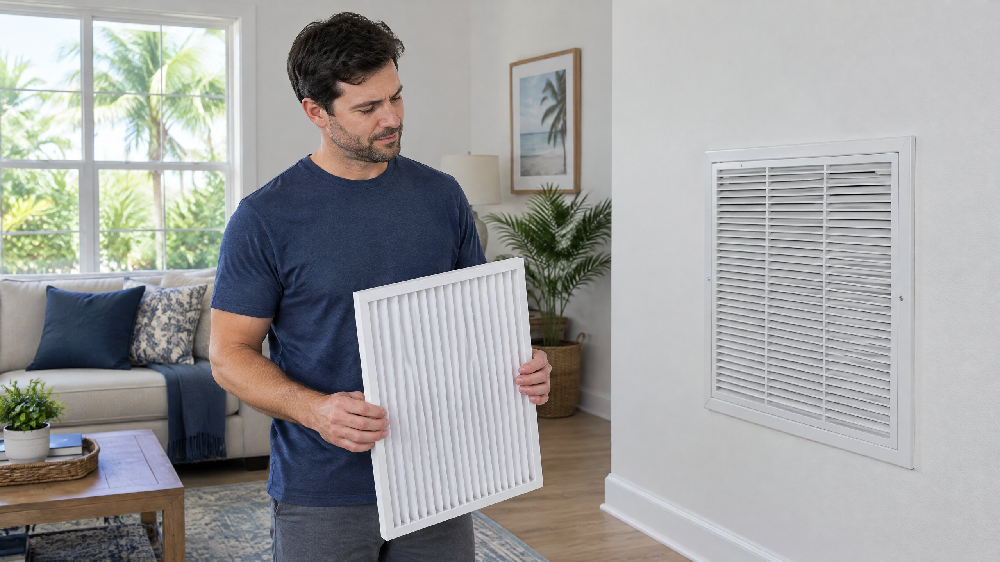

A dirty filter and a missing filter are different problems
If the air feels weak at a register, taking out a dirty filter can seem like an easy experiment. But the intended correction is a clean, compatible filter, not an unfiltered system. PNNL's Building America guidance explains that accumulated dirt can increase a filter's resistance to airflow. It calls for replacement products suited to the system's requirements. [2]
The filter captures particles before they reach components that need to remain clean. Building America guidance describes filters upstream of coils and the fan, commonly in a return duct near the air handler or behind return grilles. [2] Removing the required filter takes away that protection rather than correcting its condition.
This is a question about bypassing filtration to improve cooling. Choosing the right product is a separate decision. Our guide to choosing an AC filter covers fit, particle-capture ratings and airflow compatibility without assuming one filter suits every Tampa home.
Why dirt on the indoor coil matters
The indoor evaporator coil is part of the cooling process. ENERGY STAR explains that dirty evaporator and condenser coils reduce the system's ability to cool the home, and it identifies coil cleaning as a professional maintenance task. [1] A filter replacement does not perform that cleaning.
That distinction matters when the system already has a cooling problem. Removing a filter does not remove dirt that is already on the coil. Nor does fitting a fresh filter establish that the coil, blower or other equipment is working correctly. ENERGY STAR includes coil cleaning and blower-component care among professional maintenance tasks. [1]
Do not open the air handler or attempt to clean the coil to investigate this question. If cooling remains weak after the specified filter arrangement is restored, ask for an equipment assessment rather than extending the no-filter experiment.
What if the breeze seemed stronger without the filter?
That observation is useful information, but it is not a diagnosis. Filters present resistance to airflow, and a loaded filter can add resistance. PNNL's Building America guidance says the HVAC design needs to account for filter pressure drop and that replacement filters must suit the equipment's airflow requirements. [2]
A change in the breeze may justify checking the removed filter's condition, fit and compatibility. It does not prove that the filter was the only problem, that no filter is an acceptable operating arrangement, or that the home is now cooling properly. A register's feel is not a measurement of airflow through the complete system.
Tell the technician what product was removed, why it was removed and what changed. Do not repeat an unfiltered comparison test to produce a result. If a new filter also changed the sound, our return-grille whistle article addresses that narrower symptom; sound alone cannot identify the cause.
Confirm whether the system actually has a missing filter
An empty-looking return grille is not automatically an unfiltered AC. Building America guidance describes filter locations both near the indoor air handler and behind return grilles. [2] A system may use a documented filter location elsewhere, and the layout is not the same in every house.
Check the equipment instructions or the filtration arrangement provided by the installer. Ask which positions are intended to contain filters. Do not add filters at every opening simply because there is room, and do not remove one because another location also appears to have a filter. Confirm the designed arrangement first.
If you cannot identify the location without entering an attic, climbing or opening a service cabinet, request assistance. On The Way's air filter replacement service can help with identifying and fitting the appropriate replacement. The goal is correct filtration with the required airflow, not the greatest number of filters.
What to do if the required filter is already out
Stop the unfiltered cooling trial and restore the specified arrangement before resuming operation. PNNL's retrofit guidance calls for turning off the equipment, or setting the thermostat so it will not operate, while filters are replaced. It also addresses correct airflow orientation and restoring the grille or seals afterward. [2] Follow your own equipment and filter instructions at an ordinary accessible filter location.
For a disposable filter, use the specified fit and an approved equivalent; do not wash it or cut it down as a workaround. If the system uses a reusable product, follow that product's cleaning and drying instructions. Ask for help if the correct product is unavailable, the frame does not seat or the cover will not close normally.
If the AC ran briefly without its required filter, report the approximate duration and circumstances. That fact alone does not establish whether equipment damage occurred. This article provides no universal acceptable runtime without filtration, and a technician should not infer the coil's condition from elapsed time alone.
When a filter change is not enough
If the house still does not cool with a clean, compatible filter and the specified arrangement in place, the question has moved beyond routine filter replacement. Ask for the airflow checks appropriate to your equipment. ENERGY STAR's quality-installation guidance emphasizes airflow that meets the manufacturer's performance specifications. [3] That is a useful basis for the contractor's evaluation, not a diagnosis from a register breeze.
Request an AC repair assessment when the cooling concern persists. Report whether it affects the whole home or one room, when it began and whether it followed a filter change. The contractor can assess the filter holder, airflow and equipment condition as appropriate. Do not assume weak cooling means refrigerant must be added.
Our broader AC running but not cooling checklist covers other observations to report. For Tampa and North Tampa homeowners, actual cooling use and dusty conditions influence filter attention; they do not establish one replacement schedule or approve operating without the required filter.
Frequently Asked Questions
Can I run the AC without its required filter overnight?
Do not use that as a cooling workaround. Restore the specified filtration arrangement before operating, or ask for help obtaining the correct replacement. There is no universal acceptable no-filter runtime in this article, and an apparently normal breeze does not verify equipment condition.
Does an empty return grille mean my AC has no filter?
Not necessarily. The intended filter may be near the air handler or at another documented return location. Confirm the system's filtration arrangement before adding or removing a filter; do not assume every grille is a filter position.
If airflow improves after removal, does that prove the filter caused the problem?
No. It is an observation worth reporting, not a complete-system diagnosis. Check the filter's condition, fit and compatibility, restore the appropriate arrangement and request airflow evaluation if cooling remains poor. Do not repeat a no-filter test.
Will a clean replacement filter fix a dirty evaporator coil?
No. A replacement filter helps protect against incoming dirt; it does not remove existing coil buildup. ENERGY STAR identifies coil cleaning among professional maintenance tasks. Persistent poor cooling needs assessment even after the filter is replaced.
Editorial Source Review & Publisher
Published by On The Way Heating & Air. This article uses federal and national-laboratory guidance to explain a filtration workaround. It does not approve a product for your system or diagnose the cause of weak cooling. Individual recommendations require the equipment instructions and an assessment of the actual installation.
Sources
- ENERGY STAR — Maintenance Checklist. Filter inspection, coil care and blower airflow maintenance.
- Building America Solution Center — High-MERV Filters. Equipment protection, filter location, pressure-drop compatibility and retrofit installation guidance.
- ENERGY STAR — HVAC Quality Installation. Airflow that meets equipment manufacturer performance specifications.